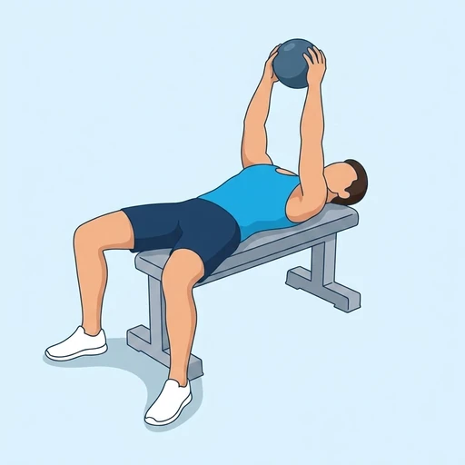

Kettlebell Skull Crusher
A skull crusher lying on a flat bench, holding a kettlebell by the horns with both hands. The offset mass hangs below the wrists, adding a grip and control challenge.
Upper arms · Kettlebell · Intermediate


Muscles worked by the Kettlebell Skull Crusher
Primary
Also called: tricep, triceps, triceps brachii, horseshoe, tris.
Equipment
Also called: kb, cast iron kettlebell, competition kettlebell, girya.
How to do the Kettlebell Skull Crusher
- Lie on a flat bench holding a kettlebell by the horns with both hands, arms extended above the chest.
- Bend only the elbows to lower the bell toward the forehead in a controlled arc.
- Keep the upper arms vertical; only the forearms move.
- Extend the elbows to press the bell back up.
- Repeat for the recommended number of repetitions.
Form tips
- Grip the horns firmly — the bell tries to rotate forward at the bottom.
- Elbows stay narrow — if they flare, the load is too heavy.
- Angle the upper arms slightly back toward the head to keep tension on the triceps at lockout.
At a glance
| Body part | Upper arms |
|---|---|
| Category | Strength |
| Force type | Push |
| Mechanic | Isolation |
| Difficulty | Intermediate |
| Equipment | Kettlebell |
| Goals | Hypertrophy |
| Tags | Arm day, Push day, Requires bench |
| MET | 5.0 (metabolic equivalent, for calorie estimates) |
| Unilateral | No |
| Bodyweight | No |
| Dataset id | kettlebell-skull-crusher |
Kettlebell Skull Crusher in German & Spanish
| German | Kettlebell-Skull-Crusher |
|---|---|
| Spanish | Skull crusher con pesa rusa |
Descriptions, instructions and tips ship in all three languages in the JSON.
Related exercises
Exercise data (JSON)
The record below is exactly what exercises.json ships for this exercise — names, descriptions, instructions and tips in English, German and Spanish.
{
"id": "kettlebell-skull-crusher",
"name_en": "Kettlebell Skull Crusher",
"name_de": "Kettlebell-Skull-Crusher",
"name_es": "Skull crusher con pesa rusa",
"description_en": "A skull crusher lying on a flat bench, holding a kettlebell by the horns with both hands. The offset mass hangs below the wrists, adding a grip and control challenge.",
"description_de": "Skull Crusher auf einer flachen Bank, Kettlebell mit beiden Händen an den Hörnern gehalten. Das versetzte Gewicht hängt unter den Handgelenken und erfordert zusätzliche Griff- und Kontrollstabilität.",
"description_es": "Un skull crusher tumbado en un banco plano, sosteniendo una pesa rusa por las asas con ambas manos. La masa descentrada cuelga por debajo de las muñecas, añadiendo un reto de agarre y control.",
"category": "strength",
"force_type": "push",
"mechanic": "isolation",
"difficulty": "intermediate",
"equipment": "kettlebell",
"body_part": "upper_arms",
"primary_muscles": [
"triceps_brachii"
],
"goals": [
"hypertrophy"
],
"tags": [
"arm_day",
"push_day",
"requires_bench"
],
"variation_group": "skull-crusher",
"is_unilateral": false,
"is_bodyweight": false,
"instructions_en": [
"Lie on a flat bench holding a kettlebell by the horns with both hands, arms extended above the chest.",
"Bend only the elbows to lower the bell toward the forehead in a controlled arc.",
"Keep the upper arms vertical; only the forearms move.",
"Extend the elbows to press the bell back up.",
"Repeat for the recommended number of repetitions."
],
"instructions_de": [
"Leg dich auf eine flache Bank und halte ein Kettlebell mit beiden Händen an den Hörnern, Arme über der Brust gestreckt.",
"Nur die Ellbogen beugen und die Glocke in einem kontrollierten Bogen zur Stirn absenken.",
"Oberarme senkrecht halten – nur die Unterarme bewegen sich.",
"Ellbogen strecken, um die Glocke zurückzudrücken.",
"Wiederhole die empfohlene Anzahl an Wiederholungen."
],
"instructions_es": [
"Acuéstate en un banco plano sosteniendo una pesa rusa por las asas con ambas manos, brazos extendidos sobre el pecho.",
"Flexiona solo los codos para bajar la campana hacia la frente en un arco controlado.",
"Mantén los brazos verticales; solo los antebrazos se mueven.",
"Extiende los codos para empujar la campana de vuelta arriba.",
"Repite el número recomendado de repeticiones."
],
"tips_en": [
"Grip the horns firmly — the bell tries to rotate forward at the bottom.",
"Elbows stay narrow — if they flare, the load is too heavy.",
"Angle the upper arms slightly back toward the head to keep tension on the triceps at lockout."
],
"tips_de": [
"Griff an den Hörnern fest – die Glocke versucht unten nach vorne zu rotieren.",
"Ellbogen eng halten – wenn sie ausflären, ist das Gewicht zu schwer.",
"Oberarme leicht Richtung Kopf neigen, um oben Spannung auf den Trizeps zu halten."
],
"tips_es": [
"Agarra las asas firmemente — la campana tiende a rotar hacia adelante en la parte inferior.",
"Los codos se mantienen pegados — si se abren, la carga es demasiado pesada.",
"Inclina los brazos ligeramente hacia atrás en dirección a la cabeza para mantener tensión en los tríceps al bloquear."
],
"met": 5.0,
"images": {
"flat": {
"start": "images/flat/kettlebell-skull-crusher-start.webp",
"peak": "images/flat/kettlebell-skull-crusher-peak.webp"
}
}
}Fetch just this exercise
const { exercises } = await fetch(
"https://exercise-dataset.com/exercises.json"
).then(r => r.json());
const ex = exercises.find(e => e.id === "kettlebell-skull-crusher");Free for personal and commercial in-app use with attribution (“Exercise data by RepDB”) — see the license and ready-made attribution snippets. Redistributing the data as a dataset or API is not permitted.